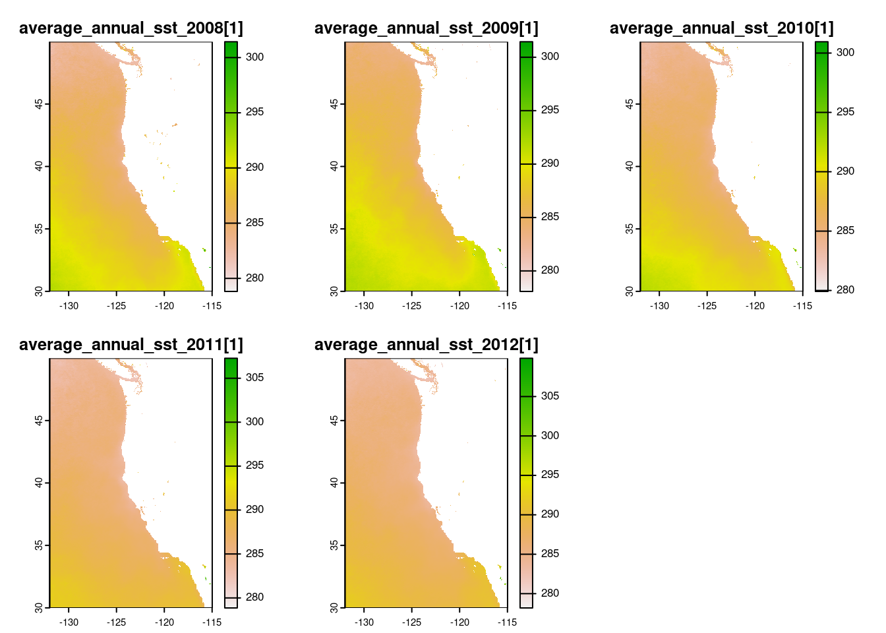
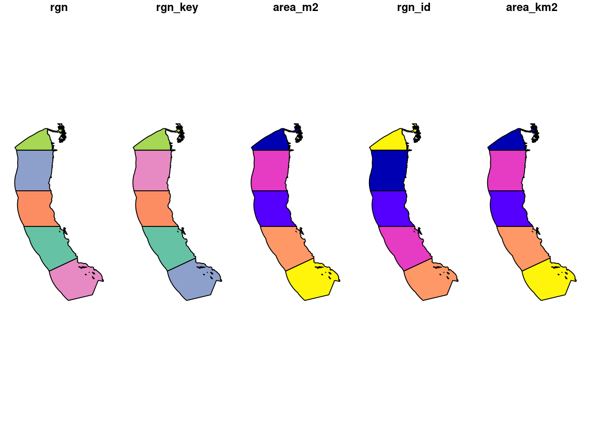
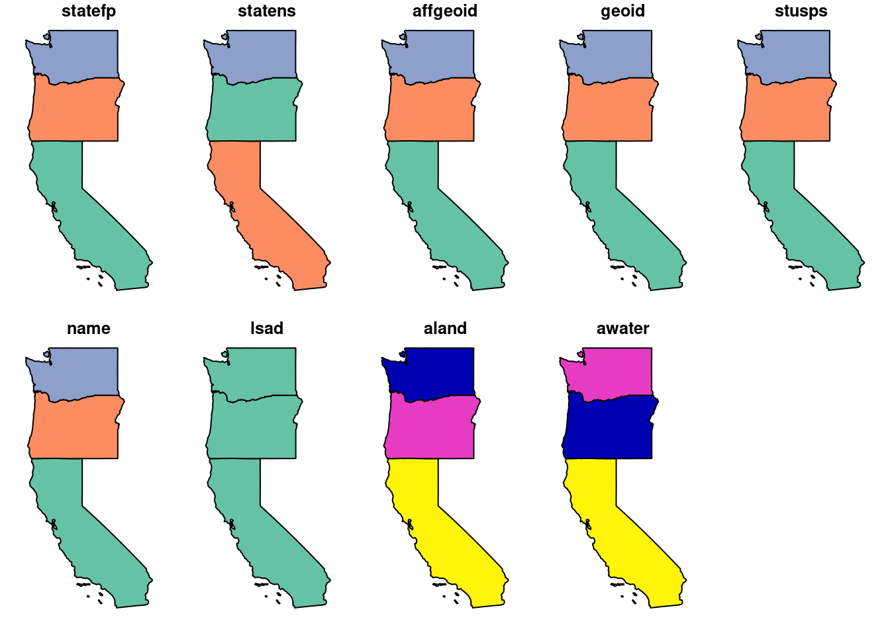
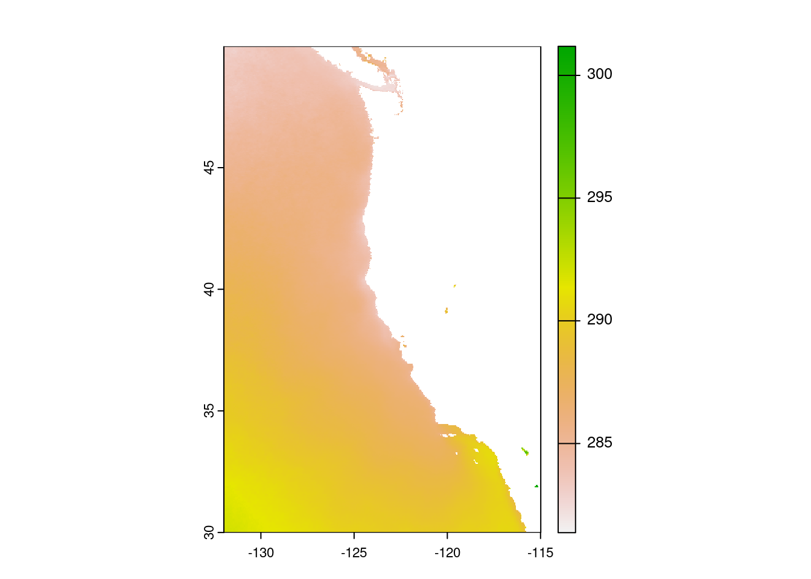
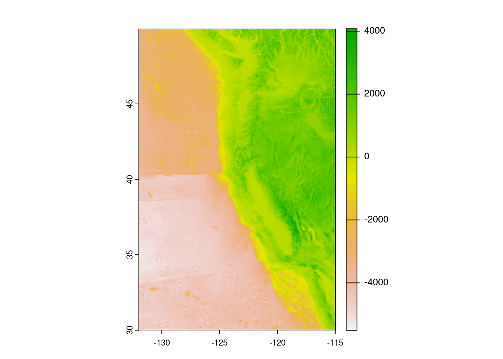
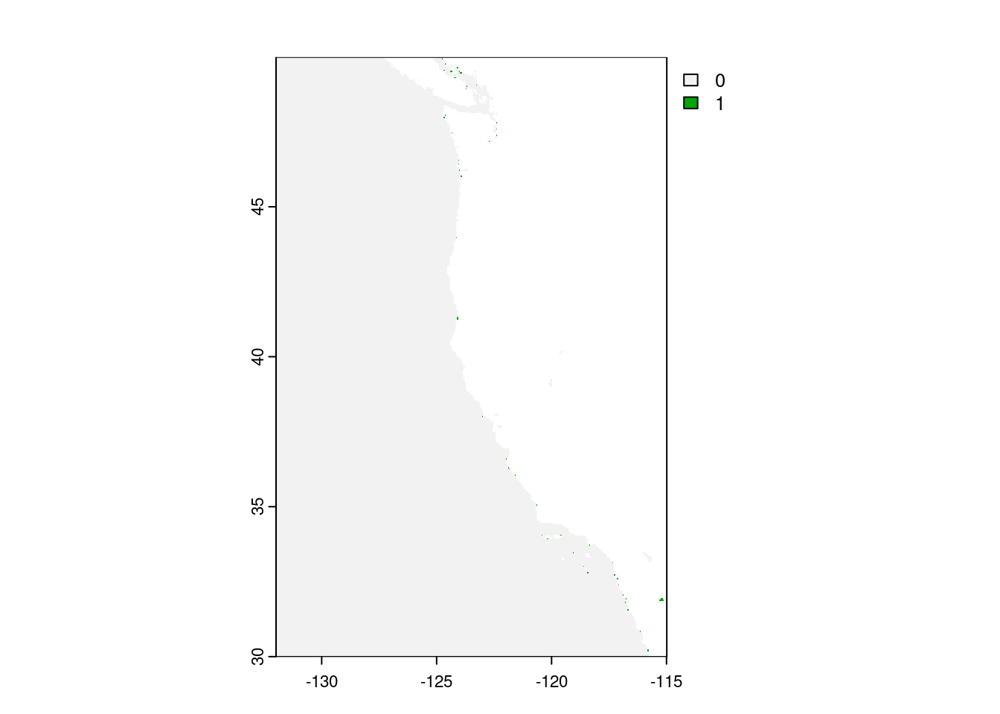
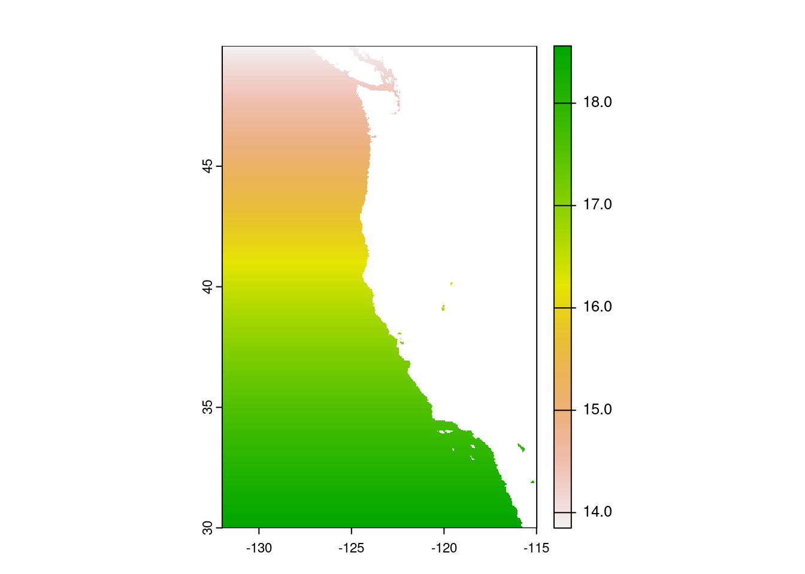
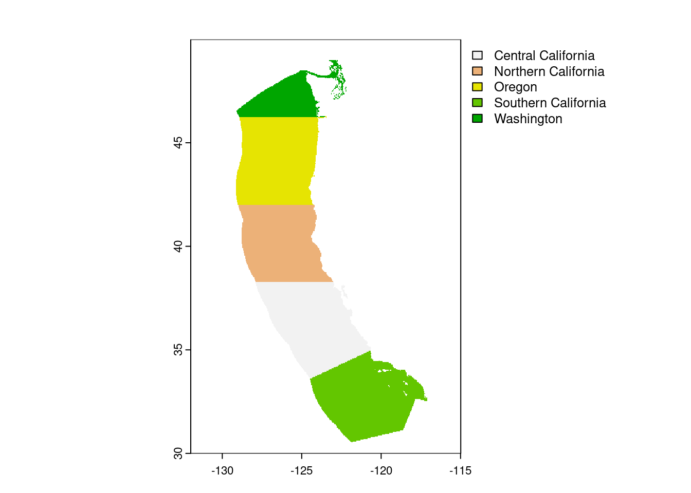
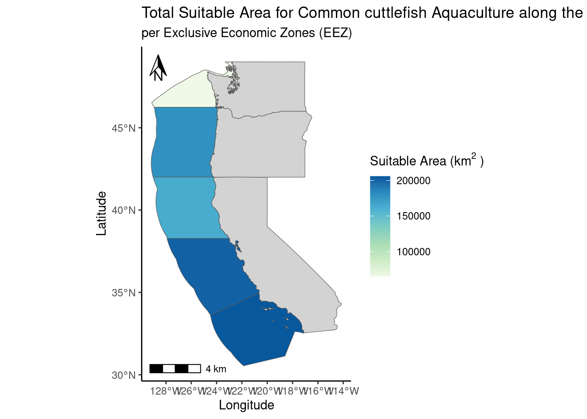

# Load Packages
library(tidyverse)
library(tmap)
library(sf)
library(here)
library(terra)
library(kableExtra)
library(ggspatial)Homework 4 EDS 223, Prioritizing Potential Aquaculture
Project Description
The purpose of this assignment is to calculate and display on a map the total suitable area for Oysters per each exclusive economic zone (EEZ) on the west coast of the United States. Additionally, a function will be created and used to display the total suitable area for another species, the common cuttlefish (Sepia officinalis).
Learning Outcomes
- Combining vector/raster data
- Resampling raster data
- Masking raster data
- Map algebra
- Creating functions
Prepare Data
# Read in shapefile for the West Coast EEZ
eez <- st_read(here("data", "wc_regions_clean[1].shp"))%>%
st_transform("EPSG:4326")Reading layer `wc_regions_clean[1]' from data source
`/Users/ejnewby/MEDS/EDS223-dataviz/hw4-evajnewby/data/wc_regions_clean[1].shp'
using driver `ESRI Shapefile'
Simple feature collection with 5 features and 5 fields
Geometry type: MULTIPOLYGON
Dimension: XY
Bounding box: xmin: -129.1635 ymin: 30.542 xmax: -117.097 ymax: 49.00031
Geodetic CRS: WGS 84# Read in bathymetry raster
depth <- terra::rast(here("data", "depth[1].tif"))%>%
terra::project("EPSG:4326")# Read in SST rasters
# Create list of all SST .tif files
sst_path = here("data")
sst_files <- list.files(sst_path,
pattern = glob2rx("*average_annual_sst_*.tif$"),
full.names = TRUE)
# Create a raster stack
sst <- terra::rast(sst_files)%>%
terra::project("EPSG:4326")# Load in basemap shapefile of west coast USA
states <- st_read(here("data", "cb_2018_us_state_20m[1].shp")) %>%
janitor::clean_names()Reading layer `cb_2018_us_state_20m[1]' from data source
`/Users/ejnewby/MEDS/EDS223-dataviz/hw4-evajnewby/data/cb_2018_us_state_20m[1].shp'
using driver `ESRI Shapefile'
Simple feature collection with 52 features and 9 fields
Geometry type: MULTIPOLYGON
Dimension: XY
Bounding box: xmin: -179.1743 ymin: 17.91377 xmax: 179.7739 ymax: 71.35256
Geodetic CRS: NAD83west_coast <- states %>%
filter(stusps %in% c("WA", "OR", "CA")) %>%
sf::st_transform(crs = st_crs(sst))# Remove unnecessary data
rm(sst_files, sst_path, states)# Check CRS'
if (st_crs(depth) == st_crs(west_coast)) {
print ("CRS match")
} else {
stop("CRS do not match")
}[1] "CRS match"if (st_crs(eez) == st_crs(sst)) {
print ("CRS match")
} else {
stop("CRS do not match")
}[1] "CRS match"if (st_crs(eez) == st_crs(west_coast)) {
print ("CRS match")
} else {
stop("CRS do not match")
}[1] "CRS match"Process data
# View rasters to see what we are working with
plot(sst)
plot(eez)
plot(depth)
plot(west_coast)
# Find the mean SST from 2008-2012 (e.g. create single raster of average SST)
avg_sst <- mean(sst)
# Plot to check
plot(avg_sst)
# Convert average SST from Kelvin to Celsius (hint: subtract by 273.15)
avg_sst_c <- avg_sst - 273.15
# Verify update
avg_sst_cclass : SpatRaster
dimensions : 480, 408, 1 (nrow, ncol, nlyr)
resolution : 0.04165905, 0.04165905 (x, y)
extent : -131.9848, -114.9879, 29.99208, 49.98842 (xmin, xmax, ymin, ymax)
coord. ref. : lon/lat WGS 84 (EPSG:4326)
source(s) : memory
name : mean
min value : 8.217548
max value : 28.033722 # Crop depth raster to match the extent of the SST raster
depth <- crop(x = depth, y = avg_sst_c)
# View the plot
plot(depth)
# Remove unnecessary data
rm(avg_sst)# Resample the depth data to match the resolution of the SST data using the nearest neighbor approach
depth <- resample(depth,
avg_sst_c,
method = "near")# Check that the depth and SST match in resolution, extent, and coordinate reference system
cat("Do the extents match?",
terra::ext(avg_sst_c) == terra::ext(depth),
"\nDo the resolutions match?",
terra::res(avg_sst_c) == terra::res(depth),
"\n Do the CRS' match?",
terra::crs(avg_sst_c) == terra::crs(depth))Do the extents match? TRUE
Do the resolutions match? TRUE TRUE
Do the CRS' match? TRUEFind suitable locations for Oysters
# reclassify SST and depth data into locations that are suitable for oysters
sst_reclass <- matrix(c(-Inf, 11, 0,
11, 30, 1,
30, Inf, 0),
ncol = 3,
byrow= TRUE)
depth_reclass <- matrix(c(-Inf, 0, 0,
0, 70, 1,
70, Inf, 0),
ncol = 3,
byrow= TRUE)# Apply matrices to reclassify depth and sst rasters for Oyster suitability
optimal_sst <- classify(avg_sst_c,
rcl = sst_reclass)
optimal_depth <- classify(depth,
rcl = depth_reclass)# Remove unnecessary data
rm(sst_reclass, depth_reclass)# Find locations that satisfy both SST and depth conditions
optimal_fun <- function(sst, depth) {
sst * depth # Use map algebra multiplication
}
optimal_locs_sst_depth <- lapp(c(optimal_sst, optimal_depth), fun = optimal_fun)
# Plot optimal locations
plot(optimal_locs_sst_depth)
Determine the most suitable EEZ for Oysters
# Select suitable cells within West Coast EEZs, using `mask()` within cellSize()
optimal_locs_mask <- cellSize(x = optimal_locs_sst_depth, # area of cells
mask = TRUE,
unit = 'km',
transform = TRUE)
# Plot to view the mask
plot(optimal_locs_mask)
# Find the total suitable area within each EEZ
# Rasterize wc_regions data
eez_raster <- rasterize(x = eez,
y = optimal_locs_mask,
field = 'rgn')
# View raster to confirm change
plot(eez_raster)
# Total suitable area can be found with zonal function from terra.
optimal_locs_eez <- zonal(x = optimal_locs_mask,
z = eez_raster,
fun = "sum",
na.rm = TRUE)# Present outputs in a table
optimal_order <- optimal_locs_eez[order(optimal_locs_eez$area, decreasing = TRUE),]
optimal_order %>%
kable(caption = "Total Suitable Area Within Each EEZ")| rgn | area | |
|---|---|---|
| 4 | Southern California | 205820.30 |
| 1 | Central California | 201496.19 |
| 3 | Oregon | 178650.46 |
| 2 | Northern California | 163008.58 |
| 5 | Washington | 64796.49 |
# To get the total suitable area into a SpatRaster, add the geometry back in the eez data frame using a left join
optimal_eez_total <- left_join(eez, optimal_order, by = 'rgn')Visualize our results for Oysters
total_area_plot <- ggplot()+
geom_sf(data = west_coast,
fill = 'lightgray')+
geom_sf(data = optimal_eez_total, aes(fill = area)) +
scale_fill_distiller(palette = "GnBu",
direction = 1) +
coord_sf()+
annotation_scale(plot_unit = 'km',
location = 'bl')+
annotation_north_arrow(location = "tl",
which_north = "true",
height = unit(0.7, "cm"),
width = unit(0.5, "cm"))+
labs(title = "Total Suitable Area for Oyster Aquaculture along the West Coast",
subtitle = "per Exclusive Economic Zones (EEZ)",
x = "Longitude",
y = "Latitude",
fill = bquote("Suitable Area (km"^{2}~")" ))+
theme_classic()
total_area_plotNow, let’s look at the Common cuttlefish (Sepia officinalis)
# Create a function so we don't need to repeat steps
optimal_map_function <- function(min_temp, max_temp, min_depth, max_depth, species_name) {
# ======= Find suitable locations =======
# ------ Classification Matrices ------ #
# Reclassification matrix for temperature
sst_reclass <- matrix(c(-Inf, min_temp, NA,
min_temp, max_temp, 1,
max_temp, Inf, NA),
ncol = 3,
byrow = TRUE)
# Reclassification matrix for depth
depth_reclass <- matrix(c(-Inf, min_depth, NA,
min_depth, max_depth, 1,
max_depth, Inf, NA),
ncol = 3,
byrow = TRUE)
# ------ Reclassify ----- #
optimal_temps <- classify(avg_sst_c, rcl = sst_reclass)
optimal_depths <- classify(depth, rcl = depth_reclass)
# Create a function to multiply cell values
optimal_funcion <- function(sst, depth) {
return(sst * depth)
}
# Apply function to reclassified rasters to find optimal locations
optimal_locs_sst_depth <- lapp(c(optimal_sst, optimal_depth), fun = optimal_fun)
# ====== Calculate suitable area ======
# Area of raster cells
optimal_locs_mask <- cellSize(x = optimal_locs_sst_depth, # area of cells
mask = TRUE,
unit = 'km',
transform = TRUE)
# rasterize eez data
eez_raster <- rasterize(x = eez,
y = optimal_locs_mask,
field = 'rgn')
# ------ Find total suitable area ----- #
# Total suitable area within each eez
optimal_locs_eez <- zonal(x = optimal_locs_mask,
z = eez_raster,
fun = "sum",
na.rm = TRUE)
# Summary table of total areas
optimal_order <- optimal_locs_eez[order(optimal_locs_eez$area, decreasing = TRUE),]
optimal_order %>%
kable(caption = "Total Suitable Area Within Each EEZ")
# ------ Left Join ----- #
optimal_eez_total <- left_join(eez, optimal_order, by = 'rgn')
# ------ Plot ----- #
total_area_plot <- ggplot()+
geom_sf(data = west_coast,
fill = 'lightgray')+
geom_sf(data = optimal_eez_total, aes(fill = area)) +
scale_fill_distiller(palette = "GnBu",
direction = 1) +
coord_sf()+
annotation_scale(plot_unit = 'km',
location = 'bl')+
annotation_north_arrow(location = "tl",
which_north = "true",
height = unit(0.7, "cm"),
width = unit(0.5, "cm"))+
labs(title = paste("Total Suitable Area for", species_name, "Aquaculture along the West Coast"),
subtitle = "per Exclusive Economic Zones (EEZ)",
x = "Longitude",
y = "Latitude",
fill = bquote("Suitable Area (km"^{2}~")" ))+
theme_classic()
total_area_plot
}# Testing on the Common cuttlefish ecology data
optimal_map_function(min_temp = 10, max_temp = 30,
min_depth = 0, max_depth = 50,
species_name = "Common cuttlefish")
References
Show the code
tribble(~Data, ~ Citation,
"Bathymetry/depth", "GEBCO Compilation Group (2022) GEBCO_2022 Grid (doi:10.5285/e0f0bb80-ab44-2739-e053-6c86abc0289c)",
"Exclusive Economic Zones (EEZ)", "Marine Regions. EEZ (Exclusive Economic Zones) database. Retrieved November 18, 2024, from https://www.marineregions.org/eez.php",
"Sea Surface Temperature (SST)", "National Oceanic and Atmospheric Administration (NOAA). 2018. 5km Sea Surface Temperature Anomaly (SSTA) products. NOAA Coral Reef Watch. Retrieved November 18, 2024, from https://coralreefwatch.noaa.gov/product/5km/index_5km_ssta.php",
"Common cuttlefish information", "SeaLifeBase. Sepia officinalis. SeaLifeBase. Retrieved November 18, 2024, from https://www.sealifebase.ca/summary/Sepia-officinalis.html",
"US States Shapefile", "U.S. Census Bureau. . Cartographic boundary files: Time-series and geographic files. Retrieved November 27, 2024, from https://www.census.gov/geographies/mapping-files/time-series/geo/carto-boundary-file.html"
) %>%
kable()| Data | Citation |
|---|---|
| Bathymetry/depth | GEBCO Compilation Group (2022) GEBCO_2022 Grid (doi:10.5285/e0f0bb80-ab44-2739-e053-6c86abc0289c) |
| Exclusive Economic Zones (EEZ) | Marine Regions. EEZ (Exclusive Economic Zones) database. Retrieved November 18, 2024, from https://www.marineregions.org/eez.php |
| Sea Surface Temperature (SST) | National Oceanic and Atmospheric Administration (NOAA). 2018. 5km Sea Surface Temperature Anomaly (SSTA) products. NOAA Coral Reef Watch. Retrieved November 18, 2024, from https://coralreefwatch.noaa.gov/product/5km/index_5km_ssta.php |
| Common cuttlefish information | SeaLifeBase. Sepia officinalis. SeaLifeBase. Retrieved November 18, 2024, from https://www.sealifebase.ca/summary/Sepia-officinalis.html |
| US States Shapefile | U.S. Census Bureau. . Cartographic boundary files: Time-series and geographic files. Retrieved November 27, 2024, from https://www.census.gov/geographies/mapping-files/time-series/geo/carto-boundary-file.html |